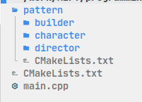
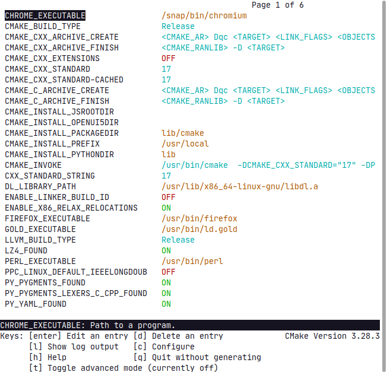

Технологии программирования
Семинар 2025/02/06
О чем предмет
В течение года мы будем учиться:
- Использовать Unix-подобные системы
- Пользоваться общими инструментами разработки
- Писать промышленный код
Оценка
Формируется из трех основных пунктов:
- 70% - задания
- 15% - активность на семинарах
- 15% - контрольная
- 10% - активность на лекциях
Краеугольный камень
Нужно установить Unix-подобную систему
Один из дистрибутивов Linux или же MacOS
Можно работать и с использованием VirtualBox или WSL
Терминал
Основной и самый общий инструмент разработчика
Стоит выделять оболочку: sh, bash, zsh, fish
Эмулятор терминала: xterm, GNOME Terminal, Kosole, PuTTY
Основные команды
| Команда | Описание |
|---|---|
cd ~/Desktop |
Переместиться в директорию по пути ~/Desktop |
ls ~/Desktop |
Показать содержимое директории ~/Desktop |
touch file |
“Потрогать” или создать файл с именем file |
mkdir tmp |
Создать директорию tmp |
Основные команды
| Команда | Описание |
|---|---|
rm file |
Удалить файл file |
rmdir tmp |
“Безопасное” удаление директории tmp |
rm -r tmp |
Рекурсивное удаление директории tmp |
Все есть файл или директория
Узнать подробную информацию: ls -l ./
тип и права коло-во владелец группа размер время последней имя
ссылок модификации
drwxr-xr-x 2 zavadvs zavadvs 4096 Feb 4 12:31 Desktop/
drwxr-xr-x 5 zavadvs zavadvs 4096 Feb 5 18:19 Documents/
drwxr-xr-x 6 zavadvs zavadvs 4096 Feb 5 18:42 Downloads/
-rw-rw-r-- 1 zavadvs zavadvs 0 Feb 5 22:50 filenameЗадание 1
- Создайте директорию
lesson01 - Перейдите в директорию
lesson01 - Создайте директорию
sublesson/01одной командой - Создайте файл
empty.txt - Проверьте работу
ls -laF ./
Тип и права
- Бывают следующие типы: -, d, l, b, c, p, s
- Права: пользователь, группа, все остальные
- Альтернативный вид прав: 4 (r), 2 (w), 1 (x)
- Изменить права можно
chmod’омchmod g-w filenamechmod 732 filename
- Изменить владельца/группу
chown’омchown usr:grp filename
Откуда мне про это знать
Документацию можно посмотреть с помощью утилиты man
Альтернативный вариант: tldr
Установка дополнительных утилит/пакетов
Разные дистрибутивы предоставляют разные пакетные менеджеры:
Ubuntu/Debian:
sudo apt install <package>Fedora/AlmaLinux:
sudo dnf install <package>Arch Linux:
sudo pacman -S <package>macOS:
brew install <package>
Перенаправление
| Команда | Описание |
|---|---|
ls . > filename.log |
Направить стандартный вывод в файл filename.log (файл
перезаписывается) |
ls . >> filename.log |
Направить стандартный вывод в файл filename.log (файл
дозаписывается) |
ls . 2> filename.log |
Направить вывод ошибок в файл filename.log |
ls . 2>&1 > filename.log |
Направить вывод ошибок в файл filename.log |
ls . 2>&1 /dev/null |
Вывод в никуда |
ls . | wc |
Направить вывод ls . в wc |
Работа с процессами
Команда ps aux используется для вывода запущенных
процессов
Unix-диспетчер задач: top или htop
Задание 2
- Выгрузите информацию о текущих процессах в файл с именем
processes.log - Выведите содержимое файла с помощью команды
cat - Попробуйте вывести содержимое несуществующего файла, вывод ошибок
направьте в
errors.log
Шаблоны поиска/фильтра
Есть возможность использовать шаблонные переменные:
ans?er: один любой символansw*er: любое количество любых символовans[vw]er: один из символов
Поиск файлов/текста
Основные утилиты:
find: поиск файл с определенным именемgrep: поиск определенного содержимого в файлеsed: редактирование текста в файле
Задание 3
- Найдите все упоминания
rootвprocesses.log, запишите в новый файлprocesses-root.log - Измените права файла
processes-root.logна возможность только читать для всех-всех-всех - Попробуйте заменить все упоминания
rootнаsuperuser
Семинар 2025/02/13
Структура файловой системы
Разработка в команде
- Как хранить разные версии файлов?
- Как передавать код между программистами?
- Как запускать код на сервере?
- Как делиться своим кодом с общественностью?
Система версионирования
- Одна из основных:
git - Есть еще другие:
svn,mercurial

Задание 1
- Установите git
- Убедитесь в установке
- Клонируйте свой первый репозиторий: https://github.com/xenoner1506/project
git clone https://github.com/xenoner1506/project
Устройство git-проекта
- Внутри каждого проекта есть директория
./project/.git
Основные команды
| Команда | Описание |
|---|---|
git clone <link> |
Копировать репозиторий по ссылке <link> |
git status |
Узнать текущее состояние репозитория |
git add <file> |
Добавить файл в систему весрсионирования |
git commit |
Зафиксировать изменения, часто используется с
-m "..." |
git log |
Распечатать историю коммитов |
git checkout <...> |
Изменить файл, переместиться на ветку и т.д. |
git switch <branch> |
Переместиться на ветку |
Задание 2
- Обновите скрипт
example/script.sh: добавьте строку для вывода переменной$PWD - Попробуйте закоммитить изменения
- Выполните команды
git config --local user.email "%YOUR EMAIL%"git config --local user.name "%YOUR NAME%"
- Повторите процедуру с коммитом
- Проверьте историю
git log --graph
HEAD всему голова
- После добавления нового коммита
HEADпереместился вперед,origin/masterостался позади HEAD: указатель на текущий коммит, может быть перемещен почти в любое местоHEADимеет “два” состояния:attachedиdetached
Origin
- Устоявшееся обозначение для ссылки на удаленный (remote) репозиторий
- Условных
origin’ов может быть несколько и с разными названиями - Добавить новый
originможно с помощью командыgit remote add <new-remote> <new-url> - Посмотреть информацию об удаленных репозиториях можно командой
git remote -v
Задание 3
- Создайте временный репозиторий на github.com
- Добавьте
new-originсо своей ссылкой - Запушьте изменения в свой репозиторий
Файл .gitignore
- В проекте могут хранится ключи или конфигурации
- Часть из них не должны быть публичными
- В ходе работы проекта появляются мусорные бинарники
- Можно запретить случайное добавление файлов в коммит, если добавить
их в файл
.gitignore - Поддерживает шаблоны
Задание 4
- Создайте файл с именем
useless.rb - Добавьте строку
*.rbв.gitignore - Проверьте
git status
Семинар 2025/02/20
Bash
- Самый частый …
- Используется для написания сценариев
- Не самый удобный в понимании человеком
- Альтернативы:
zsh,fish
Переменные
- Для определения переменной достаточно придумать ее имя
- Возможно переписать опредленную ранее переменную и все сломать
- Можно задаавть числа, строки, массивы, ассоциативные массивы и т.д.
- Переменная: просто подстановка значения
Упражнение 1
Напишем свой первый (второй) скрипт
- Создайте файл
script.sh - Определите переменную
VARIABLEзначением$1 - Сделайте вывод в консоль переменной
VARIABLE - Добавьте права на исполнения скрипта для всех
- Запустите скрипт:
./script.sh "Hello, B05-412"
Область видимости переменной
- Проверим наличие переменной
VARIABLEпосле запуска кода:printenv | grep VARIABLE - На самом деле запускается дочерняя среда
bash, но из нее переменную никто не экспортировал - Нужно добавить строку
export VARIABLEдля полноценного перемещения переменной из дочернего окружения
Кавычки
Различают три вида кавычек:
"(двойные): используются для объединения текста, не игнорируют$, , \'(одинарные): используются для объединения текста, игнорирует символ$и другие спецсимволы- ` (обратные): используются для выполнения команды (старый синтаксис,
альтернатива для
$(...))
Кавычки, примеры
> filenames="file0
file1 main.cpp"
> echo $filenames
< file0 file1 main.cpp
> echo "$filenmaes" | > echo '$filenames'
< file0 | < $filenames
file1 main.cpp | > echo '\$filenames\n'
> echo "\$filenames" | < \$filenames\n
< "$filenames" |
> echo "I found directories: `ls -d */`"
< I found directories: dir0
dir1
dir2
> echo "I found directories:" `ls -d */`
< I found directories: dir0 dir1 dir2Ветвления
if something equal to zero
then
commands
else
commands
fi3 -ge 2: больше или равно1 -lt 2: меньше чемstr0 < str1: меньшеstr0 > str1: больше (опасная)
Циклы
for el in zero one two
do
echo "$el"
done
for el in $(seq 0 1 10) # seq start step stop
do
echo "$el"
done
for (i = 0; i < 10; i++)
{
echo $i
}Перменная $IFS
- IFS: Internal Field Separator
Сравните вывод двух циклов
for el in $(cat filename.txt)
do
echo "$el"
doneIFS=$'\n'
for el in $(cat filename.txt)
do
echo "$el"
doneУпражнение 2
- Напишите скрипт создания строки. Строка содержит цифры от 0 до 9 с
разделитем
: - Попробуйте пройтись по строке как по целому элементу
- Измените
$IFSи разбейте строку по:, выведите элементы
Режим работы скрипта
Рассмотрим два основных режима работы:
set -x: вывод всех исполняемых команд в стандартный поток, “дебаг” модset -e: прекращение работы скрипта при первой же ошибке
Фоновый запуск задач
- Скрипт работает долго, но хотелось бы паработать над чем-то другим
- Для этого можно добавить
&в конце команды - Если хотим убрать лишний вывод, то просто направим его в
> /dev/null - Пример:
for el in $(seq 0 1 10); do sleep 1; echo $el; done & - Пример:
for el in $(seq 0 1 10); do sleep 1; echo $el; done > /dev/null &
Упражнение 3
- Напишите скрипт с использованием опций
set -x -e - Запустите цикл на от 0 до 100 с шагом 10
- Записывайте каждое второе число в файл
- Выводите в консоль размер получаемого файла
- Попробуйте запустить скрипт в фоновом режиме
Запуск в режиме nohup и disown
nohup: позволяет закрыть терминал и оставить в рабочем состоянии запущенную программуdisown: позволяет осуществить действиеnohupдля уже запущенного процесса
Зомби процессы
- Комбинация клавиш
ctrl+zпосылает процессу сигнал остановки - Процесс можно вернуть из фона командой
fg - Команда
bgпереводит ранее остановленный процесс в фоновый режим работы
Упражнение 4
- Запустим скрипт из предыдущего упражнения снова без прямого перевода в фоновый режим выполнениия
- Пошлите сигнал остановки:
ctrl+z - Проверьте состояние процесса через
htop - Вернитесь к выполнения скрипта с помощью
fg, повторите предыдущий пункт - Попробуйте воспользоваться командой
bg
Функции
- bash позволяет создавать свои функции
- функции удобны для повторного использования
function my_first_bash_func() {
read -p "Enter value: " value
echo $(( value + 1))
}
my_first_bash_funcЛокальность переменных, передача аргументов
value=10
function my_first_bash_func() {
local local_value=$1
echo $value $local_value
}
my_first_bash_func 15
echo $local_value $valueПарсинг аргументов
В скрипт можно передавать аргументы из командной строки
- Аргументы из командной строки получаем как в функциях:
$1 $2 ... - Кто такие
$0,$@и$#?
nargs="$#"
while [ $nargs -ge 0 ]
do
echo $1
nargs=$(( nargs - 1 ))
shift
done./script.sh 2 0 1 -2
Парсинг аргументов
while getopts "o:b" opt; do
case ${opt} in
o)
echo "Option -o was triggered with arg: $OPTARG"
;;
b)
echo "Option -b was triggered, no args: $OPTARG"
?)
echo "Invalid option: -${OPTARG}."
exit 1
;;
esac
doneЛинтер для bash
- Онлайн инструменты: https://www.shellcheck.net/
- VSCode расширения:
ext install timonwong.shellcheck - Утилита линукс:
sudo apt install shellcheck
Семинар 2025/02/27
Краткое напоминание
git clone https://github.com/xenoner1506/project- Просмотреть ветки
git branch -a - Перемещение на ветку
git switch <branch>
Hooks
- Скрипты для автоматической проверки выполнения условий для
определенных действий:
push,commit,pre-/post- - Проверьте хуки в ветке
git switch feature/hooks
stash
- Если есть наработки и нет желания коммитить, то их можно спрятать
- Если срочно нужно перейти на ветку, то текущие наработки можно спрятать
git stash [-u|-a]git stash [-u|-a] [save "..."]git stash listgit apply [<name>]git stash branch <branch/name>
Задание 1
- Внесите изменения в репозиторий: отредактируйте скрипты
- Добавьте один из скриптов в следующий коммит
- Спрячьте изменения
- Сделайте из изменений новую ветку
Merge
- Разработка может вестись в нескольких ветках
- При сливании веток возможны конфликты
- Слияние веток
(
<source> -> <destination>):git checkout <source>orgit switch <source>git merge <destination>

Конфликты
- Если файл в
<destination>был сильно изменен или удален, то как тогда такое добавлять из ветки<source>? - Приходится решать конфликт
Rebase
- Альтернативный вариант слияния веток
git checkout <source>orgit switch <source>git rebase <destination>

Rebase
- Перемещение можно осуществить в интерактивном режиме
git rebase <destination> -i
Merge vs Rebase
Задание 2
- Осуществите интерактивный
rebaseветкиfeature/rebase-copyна веткуmaster
Журнал изменений, reflog
git reflogпозволяет просмотреть в хронологическом порядке действия с репозиториемgit reflog delete <...>позволяет удалить выбранное действие
Изменение и отмена коммитов
- Изменить название последнего коммита:
git commit --amend - Отменить результаты последнего коммита добавлением нового коммита:
git revert HEAD^ - Отменить последний коммит (оставить изменения):
git reset --soft HEAD^ - Отменить последний коммит (удалить изменения):
git reset --hard HEAD^ - Отменить несколько последних коммитов:
git reset ... HEAD~n - Отменить несколько последних коммитов:
git reset ... HEAD@{n}
LFS
Большие бинарные файлы не стоит прямо в git хранить
Для этого существует Large File Storage (LFS)
sudo apt install git-lfsgit lfs "*.ext"
Добавление submodules
- Нужно использовать другие проекты для сборки
- Проект очень большой и выделяются логические отдельные модули
git submodule add <remote> <path-to-submodule>git submodule init -- <path-to-submodule>git submodule update
Удаление submodules
- Очищаем секцию в
.gitmodules, добавляем в коммит - Убираем упоминание из
.git/config - Удаляем директорию подмодуля из
.git:.git/modules/submodule git commit ...- Удаляем артефакты
Еще несколько полезных команд
git cherry-pick <hash>: Перетащить коммит<hash>на текущую веткуgit diff: Посмотреть разницу с файлом/веткойgit push origin HEAD: Отправить измененияHEADпо ссылкеorigin
Упрощение работы в будующем
lazygit: “визуальная” утилита для работы сgit- Утилиту можно установить на своем ПК, но на червере ее может не быть
- В течение семестра мы учимся работать с голым гитом и запоминаем команды
Семинар 2025/03/06
Основы dokcer
- Как запустить код в одинаковых условиях на разных ПК?
- Как масштабировать приложение для увеличения объема обрабатываемых соединений?
- Как локально запустить тесты akhcheck и не выискивать ответы в большом чате?
Docker
- Современный способ запуска изолированной среды
- Создание одинаковых условий для приложения на разных ПК
- Простое масштабирование для распределения нагрузки на приложение
- Легковесный и почти простой в запуске
Virtual Machine
- Запуск изолированной среды
- Создание одинаковых условий для приложения на разных ПК
- Позволяет попрбовать другую ОС без особой угрозы железу
- Требует большое количество ресурсов для запуска
Docker vs Virtual Machine

Установка
- На Linux: через пакетный менеджер
- На MacOS: через Docker Desktop
- На Windows: WSL+docker или Docker Desktop
Использование
- Базовая единица докера: образ (image)
- Образ запускается в виде изолированной среды: контейнер
- В контейнер можно зайти, остановить, перезапустить
Первый запуск
- Нужно подтянуть образ перед первым запуском
- Сборище образов: https://hub.docker.com/
docker pull hello-worlddocker run --rm hello-world- Если образ заранее не качать, то он будет скачан с первым запуском
команды
run
Если я не добавлю --rm
- Попробуем запустить команду
docker run hello-world - Проверим ранее запускавшиеся контейнеры:
docker ps - Проверим ВСЕ ранее запускавшиеся контейнеры:
docker ps ??
Убираем ранее запускавшиеся контейнеры
docker rm [hash|container_name]- Если же хочется удалить работающий контейнер, то нужна опция
-f
Образы
- Посмотреть локальные образы:
docker image ls | docker images - Удалить образ:
docker rmi [name:tag|hash]
Еще парочка полезных команд
- Можем запустить образ с желаемой командой:
docker run --rm --entrypoint <command> <image? - Можем запустить
bashвнутри образа в интерактивном режиме:docker run --rm --it --entrypoint bash <image> - Можем зайти в уже запущенный контейнер:
docker exec --it bash <container>
Семинар 2025/03/13
Системы сборки
- Упрощают сборку сложных проектов
- Установка определенных зависимостей
- Стандартизация сборки
- Поддерждка многоплатформенности
Истоки, bash-скрипты
- Сборка простого проекта из одного файла:
g++ main.cpp - Добавим флагов:
g++ main.cpp -Wall -Werror - И еще один:
g++ main.cpp -Wall -Werror -o main.exe
Пример
https://github.com/xenoner1506/tp-notes-code/tree/master/week05
#!/bin/bash
CFLAGS="-std=c++11 -Wall -Werror"
PROJECT_NAME=HelloWorldProject
CXX=${CXX:-g++}
${CXX} ${CFLAGS} main.cpp -o ${PROJECT_NAME}Этапы компиляции программы
- Препроцессинг
- Трансляция
- Ассемблирование
- Линковка
Препроцессинг
- Подстановка различных дериктив, вставка заголовочных файлов
g++ -E main.cpp -o main.ii.ii: intermediate input- Определите размер промежуточного файла
main.ii
Трансляция
- Перевод кода в ассемблерный
g++ -S main.ii -o main.s
Ассемблирование
- Перевод ассемблера в машинный код, получение объектного файла
as main.s -o main.o
Линковка
- Связывание всех объектных файлов и статических библиотек в единый исполняемый файл
g++ main.o -o main- Обратный процесс:
objdump -d main.o - Просмотреть более человеческом формате:
nm -D main.o
Библиотеки
- Есть возможность выделить часть кода в самостоятельную структуру: библиотеку
- Выделим два типа библиотек: динамические и статические
- Динамическая: может быть использована несколькими проектами
- Статическая: компилируется для определенного проекта
Статическая библиотека
- Полноценно добавляется в компилируемый код
- Испольщуется для увеличения автономности запуска
ar -t /usr/lib/x86_64-linux-gnu/libc.aar: утилита для просмотра архива
Динамическая библиотека
- Отдельный скомпилированный код, который будет вызван в момент запуска программы
- Динамическая библиотека один раз подгружается и используется множеством программ единовременно
nm -C main.onm -DC main
Процесс создания библиотеки
- Преобразовываем файл в объектные:
g++ -c [-fPIC] libmyname.cpp -o libmyname.o - Архивируем (статическая):
ar rcs libmyname.a libmyname.o - Преобразовываем еще раз (динамическая):
g++ -shared libmyname.o -o libmyname.so
Компиляция программ с использованием библиотек
- Добавляем новые флаги:
g++ main.cpp -L/path/to/lib/dir/ -lmylibrary -o main - Попробуем запустить получившиеся бинарники внутри докера:
docker run -it --name test ubuntu:22.04 bash - В новом окне перенесем файлы в докер:
docker cp main test:/tmp - В случае использования динамической библиотеки не получится запустить программу. Почему?
LD_LIBRARY_PATH
- Специальная переменная среды для указания пути к динамическим библиотекам
- Настройки переменной хранятся в
/etc/ld.so.conf - Альтернатива: указать линковщику путь к библиотеке в момент
компиляции:
g++ main.cpp -lmylibrary -L/path/to/lib/dir/ -Wl,-rpath=/path/to/lib/dir/ -o main
Компиляция больших проектов
- Для упрощения компиляция сложного проекта разделяется на несколько стадий
- Изменение части кода не должно приводить к компиляции всех объектов
Утилита make
- Утилита появилась в 1976 году
- Упрощает процесс компиляции больших проектов, но может быть использована для автоматизации других процессов
- Разделяет процесс на цели, которые образуют DAG
Определение
- Классический
Makefile:
all:
g++ main.cpp -o main
[target]: [dependencies]
[tab] command[target]: файл, который будет создан[dependencies]: от каких целей зависит даннаяcommand: что нужно выполнить для получения[target]
Классические цели
all: цель по умолчанию, обычно не указывается при запускеmakeclean: убрать артефактыinstall/uninstall: установить, удалить программу.PHONY: специальная цель для обозачения фальшивых целей, которые не являются файлами
Переменные
- Можно определять свои:
CFLAGS, ... - Есть встроенные
$?и$@: подставляют[dependencies]и[target]
Подавление вывода команд
- Осуществляется с помощью знака
@перед командой - Сравните вывод с
@и без
.PHONY: all mk_build
all: mk_build mk_build_alt
mk_build:
mkdir -p build
mk_build_alt:
@mkdir -p buildУтилита CMake
- Утилита появилась в 2000
- Упрощает сборку проекта, если сравнивать с
make - В каком-то смысле более кроссплатформенный
- Обертка над
makeи ему подобных сборщиков (напримерninja)
Определение
- Классический
CMakeLists.txt:
Создание библиотек с CMake
- Требуется добавить новые дериктивы
Выбираем место для артефактов
Семинар 2025/04/20
Вложенные CMakeLists.txt

Сборка библиотек
...
include_directories(${CMAKE_CURRENT_SOURCE_DIR}/include)
add_library(${LIBNAME} SHARED ${LIBSOURCES})
...
target_link_libraries(${PROJECT_EXECUTABLE} [PRIVATE|PUBLIC] ${LIBNAME})PRIVATE|PUBLIC: указывает способ подключения бибилиотек в случае многоуровневой зависимости. Связано со способом создания библиотекиSHARED|STATIC.
Подключение уже установленных
...
find_package(LIBNAME REQUIRED)
if(LIBNAME_FOUND)
message(STATUS "found LIBNAME in ${LIBNAME_INCLUDE_DIRS}")
else(LIBNAME_FOUND)
message(FATAL_ERROR "LIBNAME not found")
endif(LIBNAME_FOUND)
include_directories(
${LIBNAME_INCLUDE_DIRS}
)
...
target_link_libraries(${PROJECT_EXECUTABLE} ${LIBNAME_LIBRARIES})Подключение уже установленных
- Поиск библиотек производится в:
- пути
/usr/lib/x86_64-linux-gnu/cmake - путях переменной
CMAKE_PREFIX_PATH - пути с дополнительными утилитами
$PROJECT/cmake/
- пути
- Можно передать значение переменной с помощью флага
-D
Подгрузка сторонних библиотек
...
include(FetchContent)
FetchContent_Declare(
LIBNAME
GIT_REPOSITORY https://github.com/library/link.git
GIT_TAG v1.0.0
)
FetchContent_MakeAvailable(LIBNAME)
execute_process(COMMAND -S . -B ${LIBNAME_BINARY_DIR}
WORKING_DIRECTORY ${LIBNAME_SOURCE_DIR})
execute_process(COMMAND -B . WORKING_DIRECTORY ${LIBNAME_BINARY_DIR})
...Пользовательские модули
- Модули пользователя могут быть сохранены в директории
cmakeкорня проекта:project/cmake - Название пользовательского модуля может быть любым, но опредленного
расширения:
*.cmake
Пользовательские цели
add_custom_target(target_name
COMMAND ${CMAKE_COMMAND} -E remove_directory ${PROJECT_SOURCE_DIR}/
WORKING_DIRECTORY ${PROJECT_SOURCE_DIR}/../
COMMENT "Delete ${PROJECT_BUILD_DIR}/"
VERBATIM
)Утилита ccmake
- Есть консольный GUI для удобного определения включения опций
- Установка:
sudo apt install cmake-curses-gui - Запуск:
ccmake ../
Утилита ccmake

Пакетный менеджер vcpkg
- Удобный способ устанавливать библиотеки в проекте
- Не требует прямого прописывания дейтсвий по сборке проекта и дополнительных библиотек
- Конфигурации в формате JSON-файла
- Документация по установке: https://learn.microsoft.com/en-us/vcpkg/get_started/get-started
Пакетный менеджер conan
- Еще один пакетный менеджер для С++
- Позволяет хранить конфигурации в формате CFG
- Установить можно через Python:
pip install conan
Python
- Сложности с зависимостями
- Нужно создавать отдельно окружение:
virtual-env
pip
- Пакетный менеджер для библиотек
- Использует кеш
- Не любит решать конфликты